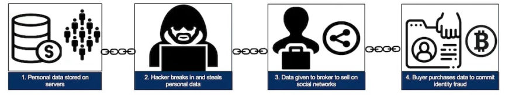
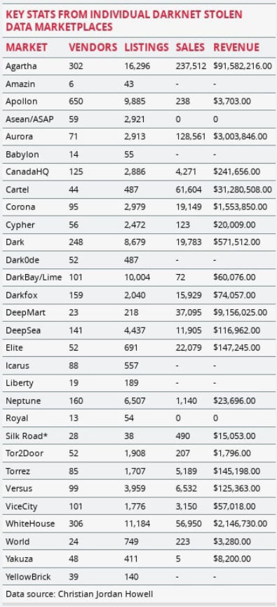
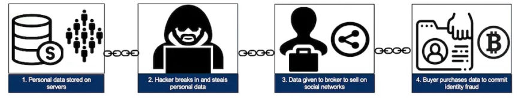
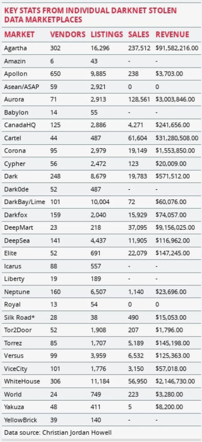

Darknet markets and stolen data - A big profiting business
~3 min read | Published on 2022-12-13, tagged Darkweb-Market, Fraud using 522 words.
It is common to hear news reports about large data breaches, but what happens once your personal data is stolen? Our research shows that, like most legal commodities, stolen data products flow through a supply chain consisting of producers, wholesalers, and consumers. But this supply chain involves the interconnection of multiple criminal organizations operating in illicit underground marketplaces.
The stolen data supply chain begins with producers—hackers who exploit vulnerable systems and steal sensitive information such as credit card numbers, bank account information, and Social Security numbers. Next, the stolen data is advertised by wholesalers and distributors who sell the data. Finally, the data is purchased by consumers who use it to commit various forms of fraud, including fraudulent credit card transactions, identity theft, and phishing attacks.

This trafficking of stolen data between producers, wholesalers, and consumers is enabled by darknet markets, which are websites that resemble ordinary e-commerce websites but are accessible only using special browsers or authorization codes.

Recognizing the role of darknet markets in trafficking stolen data, we conducted the largest systematic examination of stolen data markets that we are aware of to better understand the size and scope of this illicit online ecosystem. To do this, we first identified 30 darknet markets advertising stolen data products.
Next, we extracted information about stolen data products from the markets on a weekly basis for eight months, from September 1, 2020, through April 30, 2021. We then used this information to determine the number of vendors selling stolen data products, the number of stolen data products advertised, the number of products sold, and the amount of revenue generated.
In total, there were 2,158 vendors who advertised at least one of the 96,672 product listings across the 30 marketplaces. Vendors and product listings were not distributed equally across markets. On average, marketplaces had 109 unique vendor aliases and 3,222 product listings related to stolen data products. Marketplaces recorded 632,207 sales across these markets, which generated $140,337,999 in total revenue. Again, there is high variation across the markets. On average, marketplaces had 26,342 sales and generated $5,847,417 in revenue.
After assessing the aggregate characteristics of the ecosystem, we analyzed each of the markets individually. In doing so, we found that a handful of markets were responsible for trafficking most of the stolen data products. The three largest markets—Apollon, WhiteHouse, and Agartha—contained 58 percent of all vendors. The number of listings ranged from 38 to 16,296, and the total number of sales ranged from 0 to 237,512. The total revenue of markets also varied substantially during the 35-week period: It ranged from $0 to $91,582,216 for the most successful market, Agartha.
For comparison, most midsize companies operating in the US earn between $10 million and $1 billion annually. Both Agartha and Cartel earned enough revenue within the 35-week period we tracked them to be characterized as midsize companies, earning $91.6 million and $32.3 million, respectively. Other markets like Aurora, DeepMart, and WhiteHouse were also on track to reach the revenue of a midsize company if given a full year to earn.
Sources: The article is republished from The Conversation under a Creative Commons license. You can read the original article here.
The stolen data supply chain begins with producers—hackers who exploit vulnerable systems and steal sensitive information such as credit card numbers, bank account information, and Social Security numbers. Next, the stolen data is advertised by wholesalers and distributors who sell the data. Finally, the data is purchased by consumers who use it to commit various forms of fraud, including fraudulent credit card transactions, identity theft, and phishing attacks.

This trafficking of stolen data between producers, wholesalers, and consumers is enabled by darknet markets, which are websites that resemble ordinary e-commerce websites but are accessible only using special browsers or authorization codes.
Stolen data ecosystem

Recognizing the role of darknet markets in trafficking stolen data, we conducted the largest systematic examination of stolen data markets that we are aware of to better understand the size and scope of this illicit online ecosystem. To do this, we first identified 30 darknet markets advertising stolen data products.
Next, we extracted information about stolen data products from the markets on a weekly basis for eight months, from September 1, 2020, through April 30, 2021. We then used this information to determine the number of vendors selling stolen data products, the number of stolen data products advertised, the number of products sold, and the amount of revenue generated.
In total, there were 2,158 vendors who advertised at least one of the 96,672 product listings across the 30 marketplaces. Vendors and product listings were not distributed equally across markets. On average, marketplaces had 109 unique vendor aliases and 3,222 product listings related to stolen data products. Marketplaces recorded 632,207 sales across these markets, which generated $140,337,999 in total revenue. Again, there is high variation across the markets. On average, marketplaces had 26,342 sales and generated $5,847,417 in revenue.
After assessing the aggregate characteristics of the ecosystem, we analyzed each of the markets individually. In doing so, we found that a handful of markets were responsible for trafficking most of the stolen data products. The three largest markets—Apollon, WhiteHouse, and Agartha—contained 58 percent of all vendors. The number of listings ranged from 38 to 16,296, and the total number of sales ranged from 0 to 237,512. The total revenue of markets also varied substantially during the 35-week period: It ranged from $0 to $91,582,216 for the most successful market, Agartha.
For comparison, most midsize companies operating in the US earn between $10 million and $1 billion annually. Both Agartha and Cartel earned enough revenue within the 35-week period we tracked them to be characterized as midsize companies, earning $91.6 million and $32.3 million, respectively. Other markets like Aurora, DeepMart, and WhiteHouse were also on track to reach the revenue of a midsize company if given a full year to earn.
Sources: The article is republished from The Conversation under a Creative Commons license. You can read the original article here.